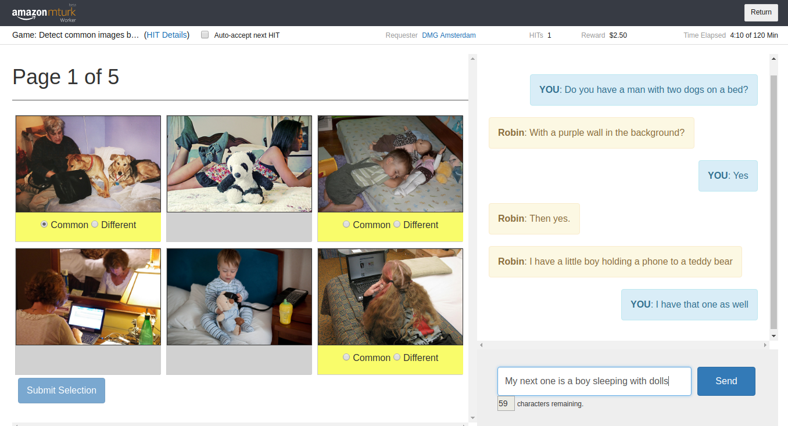

Dataset
A collection of 2,500 visually-grounded dialogue interactions designed to investigate shared dialogue history.
A large-scale collection of visually-grounded, task-oriented dialogues
designed to investigate shared dialogue history accumulating during conversation.
Developed by the Dialogue Modelling Group (DMG) at the University of Amsterdam
A collection of 2,500 visually-grounded dialogue interactions designed to investigate shared dialogue history.

An in-depth analysis of the central phenomena exhibited by the collected data.

A heuristics developed to automatically extract chains of image mentions generated during a conversation.

A set of baseline models to predict mentioned images based on current utterances and dialogue history.
The Team behind the PhotoBook Task and Dataset.

Download the dataset and other resources.
The past few years have seen an immense interest in developing and training computational agents for visually-grounded dialogue, the task of using natural language to communicate about visual input. The models developed for this task often focus on specific aspects such as image labelling, object reference, or question answering, but fail to produce consistent outputs over a conversation.
We believe that this shortcoming is mostly due to a missing representation of the participant's shared common ground which develops and extends during an interaction.
To facilitate progress towards more consistent and effective conversation, we introduce the PhotoBook Dataset: a large collection of 2,500 human-human, visually-grounded and goal-oriented conversations between pairs of participants.
The PhotoBook Dataset was collected using a dedicated conversation task called the PhotoBook Task. In the PhotoBook task, two participants are paired for an online multi-round image identification game. In this game they are shown collections of images which resemble the page of a photo book. Each of these collections is a randomly ordered grid of six similar images depicting everyday scenes extracted from the MS COCO Dataset. On each page of the photo book, some of the images are present in the displays of both participants (the common images). The other images are each shown to one of the participants only (the different images). Three of the images in each display are highlighted through a yellow bar under the picture. The participants are tasked to mark these highlighted target images as either common or different by chatting with their partner. A full game consists of five consecutive rounds, where some of the previously displayed images will re-appear in later rounds, prompting participants to re-refer to them multiple times.
As a result of a carefully designed setup, dialogues in the PhotoBook dataset contain multiple descriptions of each of the target images and thus provide a valuable resource for investigating participant cooperation, and specifically collaborative referring expression generation and resolution with respect to the conversation's common ground.
During data collection, we recorded anonymised participant IDs, the author, timestamp and content of all sent messages, label selections and button clicks, plus self-reported collaboration performance scores. The dataset contains a total of 2,502 completed games with 164,615 utterances, 130,322 actions, and spans a vocabulary of 11,805 unique tokens.
For a detailed account, see our paperJanosch Haber, Tim Baumgärtner, Ece Takmaz, Lieke Gelderloos, Elia Bruni, and Raquel Fernández.and Janosch Haber's Master's Thesis
The PhotoBook Dataset: Building Common Ground through Visually Grounded Dialogue.
In Proceedings of the 57th Annual Meeting of the Association for Computational Linguistics (ACL), 2019
Janosch Haber.
How should we call it? - Introducing the PhotoBook Conversation Task and Dataset
for Training Natural Referring Expression Generation in Artificial Dialogue Agents.
Master’s Thesis. University of Amsterdam. Amsterdam, The Netherlands, 2018